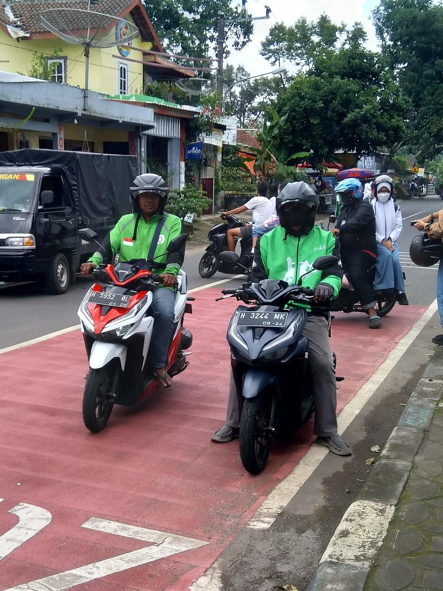

Promo GoRide Rp1.000 yang viral itu sudah berakhir pada 30 September 2026, jadi jangan berharap tarif seribu rupiah muncul di aplikasimu. Kabar baiknya, ada jalur lain yang masih berlaku di November 2026, yaitu diskon GoPay Later untuk pengguna baru dan diskon bagi yang baru pertama kali bayar perjalanan pakai GoPay. Artikel ini menjelaskan mana yang masih jalan dan cara memakainya.
Frasa gojek mulai 1000 di GoPay naik ke tiga besar tren X Indonesia pada 9 November 2026 karena banyak pengguna membagikan tangkapan layar tarif GoRide Rp1.000. Tarif itu nyata, tapi berasal dari program September 2026 yang hanya berlaku 1 sampai 30 September untuk pengguna yang baru pertama kali pesan GoRide lewat Gojek Mini App di aplikasi GoPay, di wilayah layanan GoRide MURAAAH, dengan kuota terbatas dan sekali pakai per pengguna. Program itu tidak diperpanjang. Yang masih berlaku ada dua. Pertama, pengumuman Gojek 5 November 2026 memberi diskon hingga Rp12.000 untuk GoRide dan hingga Rp8.000 untuk GoCar bagi pengguna yang belum pernah membayar perjalanan dengan GoPay. Kedua, halaman resmi GoPay Later mencatat welcome bonus 1 sampai 30 November 2026: pengguna baru GoPay Later mendapat diskon Rp5.000 untuk GoRide dan Rp20.000 untuk GoCar dengan minimum transaksi Rp1.000 dan kuota 500. Jadi Rp1.000 di November 2026 bukan tarif langsung, melainkan harga akhir sesudah diskon dan hanya untuk pengguna yang memenuhi syarat. Cek voucher dan harga akhir di aplikasimu sebelum menekan pesan.
Kenapa frasa ini tiba-tiba viral lagi?
Pada Senin, 9 November 2026, frasa gojek mulai 1000 digopay muncul di posisi tiga besar tren X Indonesia dan bertahan sekitar 13 jam menurut pemantau tren SinyalTren. Pemicunya sederhana: tangkapan layar tarif Rp1.000 mudah dibagikan dan mudah dipercaya, karena GoPay memang pernah menjual tarif itu. Banyak yang baru melihatnya mengira promo itu masih berjalan, lalu ikut membagikan dan mencarinya di Google. Di sinilah kesalahpahaman muncul. Tren di media sosial hanya membuktikan frasanya ramai dibicarakan, bukan membuktikan promonya masih aktif untuk semua orang. Promo September itu memang dibatasi wilayah, kuota, dan satu kali pakai, jadi sejak awal pun tidak semua pengguna bisa mendapatkannya.

Foto: Hanif Al Husaini, CC BY 4.0, via Wikimedia Commons
Apakah promo GoRide Rp1.000 masih berlaku di November 2026?
Jawabannya tidak, untuk program yang sama persis. Halaman promo resmi GoPay mencatat program GoRide Rp1.000 sampai Rp2.000 berlaku 1 sampai 30 September 2026. Syaratnya jelas: pengguna baru pertama kali pesan GoRide lewat Gojek Mini App di dalam aplikasi GoPay, pembayaran memakai GoPay di aplikasi GoPay, wilayah yang menyediakan GoRide MURAAAH, kuota terbatas, dan satu kali pakai. Sampai 9 November 2026, tidak ada pengumuman publik yang mengonfirmasi perpanjangan program itu. Artinya, tangkapan layar tarif Rp1.000 yang beredar kemungkinan besar berasal dari September, atau dari penawaran personal yang muncul di akun tertentu. Penawaran personal memang bisa muncul, karena voucher tiap akun bisa berbeda. Jadi satu-satunya cara memastikan adalah membuka aplikasimu sendiri dan melihat harga akhir sebelum memesan.
Promo Gojek apa saja yang masih bisa kamu pakai di November 2026?
Walau program September sudah tutup, November 2026 masih punya tiga jalur diskon yang tercatat resmi. Pertama, diskon pertama kali bayar pakai GoPay. Gojek mengumumkan pada 5 November 2026 bahwa pengguna yang belum pernah memakai GoPay sebagai metode pembayaran perjalanan mendapat diskon hingga Rp12.000 untuk GoRide dan hingga Rp8.000 untuk GoCar. Kedua, welcome bonus GoPay Later. Halaman resmi GoPay Later yang diperbarui 3 November 2026 mencatat, selama 1 sampai 30 November 2026, pengguna baru GoPay Later mendapat diskon Rp5.000 untuk GoRide dan Rp20.000 untuk GoCar, dengan minimum transaksi Rp1.000 dan kuota 500. Pengguna GoPay Later yang belum pernah memakai limitnya mendapat penawaran yang sama. Ketiga, diskon pengguna lama GoPay Later. Masih di halaman yang sama, pengguna lama mendapat diskon flat Rp3.000 untuk GoRide dengan minimum transaksi Rp9.000, dan diskon flat Rp5.000 untuk GoCar dengan minimum transaksi Rp20.000, kuota 500 selama November. Perlu dicatat, GoPay Later adalah layanan bayar nanti, bukan saldo biasa. Aktivasi butuh persetujuan syarat dan ketentuan, dan tagihan jatuh tempo tanggal 1 bulan berikut untuk transaksi tanggal 1 sampai 14, atau tanggal 1 dua bulan berikut untuk transaksi tanggal 15 sampai akhir bulan. Jangan aktifkan hanya demi diskon kalau kamu tidak butuh layanan bayar nanti.
Foto: Bhullargraphic, CC BY-SA 4.0, via Wikimedia Commons
Bagaimana cara pesan GoRide langsung dari aplikasi GoPay?
Kamu tidak wajib membuka aplikasi Gojek untuk pesan GoRide. GoRide tersedia sebagai Mini App di dalam aplikasi GoPay.
- Buka aplikasi GoPay dan pastikan saldonya cukup.
- Pilih GoRide di halaman utama, atau cari di bagian Transport dan Travel kalau ikonnya tidak langsung terlihat.
- Masukkan lokasi penjemputan dan tujuan, lalu pilih jenis layanan yang muncul.
- Periksa voucher yang terpasang otomatis dan harga akhir di halaman pembayaran.
- Pilih GoPay sebagai metode pembayaran, lalu konfirmasi pesanan.
Kalau voucher tidak muncul, berarti akunmu tidak memenuhi syarat program itu, atau kuotanya sudah habis. Jangan memaksa dengan kode dari luar aplikasi, karena kode yang beredar sering sudah kedaluwarsa atau bukan untuk wilayahmu.
Apa yang perlu kamu periksa sebelum pesan?
Tiga hal ini menentukan apakah kamu benar-benar dapat harga murah. Pertama, periode dan kuota. Semua promo di atas punya batas tanggal dan kuota, dan GoPay Later berhak menghentikan promo tanpa pemberitahuan. Kedua, status akunmu. Diskon terbesar di November 2026 ditujukan untuk pengguna baru atau pengguna yang belum pernah memakai GoPay dan GoPay Later, jadi pengguna lama jangan berharap potongan yang sama. Ketiga, harga akhir. Diskon hingga Rp12.000 bukan berarti tarifmu jadi Rp1.000, karena potongan dihitung dari tarif normal perjalananmu. Buka halaman pembayaran, baca totalnya, baru putuskan. Kalau totalnya tidak sesuai harapan, batalkan sebelum konfirmasi.
Jadi, frasa gojek mulai 1000 di GoPay viral karena tarifnya nyata, tapi waktunya sudah lewat. Yang masih bisa kamu kejar di November 2026 adalah diskon pertama kali bayar pakai GoPay dan welcome bonus GoPay Later, keduanya dengan syarat dan kuota masing-masing. Cek aplikasimu sekarang, karena promo seperti ini bisa habis lebih cepat dari yang kamu kira.
Baca juga: baca cara transfer uang ke luar negeri pakai GoPay kalau kamu juga memakai GoPay buat urusan lain, atau lihat artikel Other lainnya dan kumpulan artikel di blog.
Sumber dan Info Resmi
Fakta dan langkah di artikel ini merujuk ke sumber berikut:
- Marketing.co.id: frasa gojek mulai 1000 di GoPay jadi perbincangan X Indonesia Senin 9 November 2026; program GoRide Rp1.000 sampai Rp2.000 berlaku 1 sampai 30 September 2026 untuk pengguna baru pertama kali pesan GoRide lewat Gojek Mini App di aplikasi GoPay, wilayah GoRide MURAAAH, kuota terbatas, satu kali pakai; belum ada pengumuman perpanjangan sampai 9 November 2026; pengumuman Gojek 5 November 2026 memberi diskon hingga Rp12.000 untuk GoRide dan hingga Rp8.000 untuk GoCar bagi pengguna yang belum pernah membayar perjalanan dengan GoPay; cara pesan GoRide dari aplikasi GoPay.
- GoPay Later (halaman resmi, diperbarui 3 November 2026): welcome bonus 1 sampai 30 November 2026, pengguna baru GoPay Later dan pengguna yang belum pernah memakai limit mendapat diskon Rp5.000 untuk GoRide dan Rp20.000 untuk GoCar dengan minimum transaksi Rp1.000 dan kuota 500; pengguna lama mendapat diskon flat Rp3.000 untuk GoRide minimum Rp9.000 dan Rp5.000 untuk GoCar minimum Rp20.000, kuota 500; GoPay Later berhak mengubah syarat dan menghentikan promo tanpa pemberitahuan; jatuh tempo tagihan tanggal 1 bulan berikut untuk transaksi tanggal 1 sampai 14, tanggal 1 dua bulan berikut untuk transaksi tanggal 15 sampai akhir bulan.
- TrendingSoup: frasa gojek mulai 1000 digopay peringkat 3 tren X Indonesia, diperbarui 10 November 2026 pukul 02:39 UTC.
- SinyalTren: frasa gojek mulai 1000 digopay bertahan 13,0 jam di tren X Indonesia, diperbarui 9 November 2026.